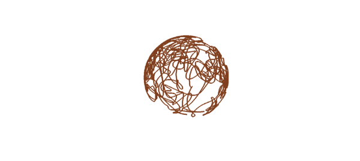
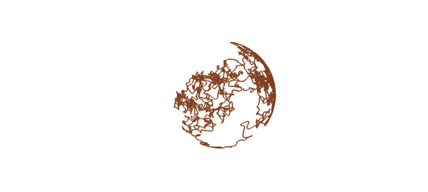

Suppose $A$, $B$, and $C$ are the matrices
A = [0 1 0; -1 0 0; 0 0 0], B = [0 0 1; 0 0 0; -1 0 0], C = [0 0 0; 0 0 1; 0 -1 0]
A =
0 1 0
-1 0 0
0 0 0
B =
0 0 1
0 0 0
-1 0 0
C =
0 0 0
0 0 1
0 -1 0
and we consider the random ODE $du/dt = fAu + gBu + hBu$ where $f$, $g$, and $h$ are random functions. Since the matrices are skew-symmetric, energy will be conserved. So we'll get a trajectory $u(t) = (x(t),y(t),z(t))^T$ that wanders around on a sphere. As usual in 3D, it helps a lot if you see a moving picture, which is what you get if you run this as an m-file.
tic, dom = [0 100]; lambda = 0.5; brown = [.5 .25 .12]; rng(0), u0 = randn(3,1); u0 = u0/norm(u0); L = chebop(dom); L.lbc = @(x,y,z) [x-u0(1); y-u0(2); z-u0(3)]; f = randnfun(lambda,dom); g = randnfun(lambda,dom); h = randnfun(lambda,dom); L.op = @(t,x,y,z) [diff(x)-f*y-g*z; diff(y)+f*x-h*z; diff(z)+g*x+h*y]; LW = 'linewidth'; [x,y,z] = L\0; plot3(x,y,z,'color',brown,LW,4), axis equal off, toc for j = 1:720, camorbit(.5,0), drawnow, end
Elapsed time is 12.877707 seconds.

Here we repeat everything with the value of $\lambda$ cut by a factor of 4. This would make the run 4 times slower or so, but 12-digit accuracy is a waste here, so we loosen the tolerance.
tic, lambda = lambda/4; cheboppref.setDefaults('ivpAbsTol',1e-6,'ivpRelTol',1e-6)
f = randnfun(lambda,dom); g = randnfun(lambda,dom); h = randnfun(lambda,dom);
L.op = @(t,x,y,z) [diff(x)-f*y-g*z; diff(y)+f*x-h*z; diff(z)+g*x+h*y];
[x,y,z] = L\0; plot3(x,y,z,'color',brown,LW,3), axis equal off, toc
for j = 1:720, camorbit(.5,0), drawnow, end
cheboppref.setDefaults('factory')
Elapsed time is 14.854459 seconds.
